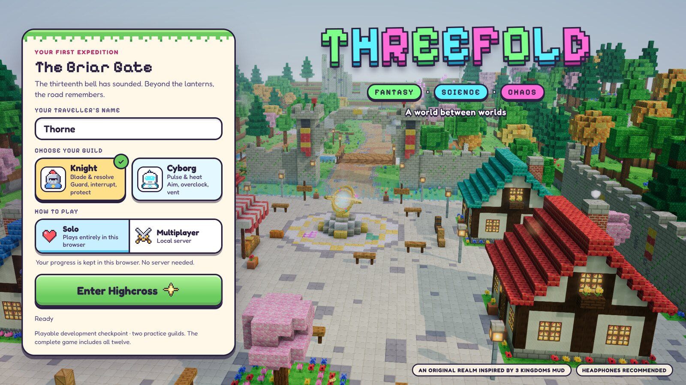
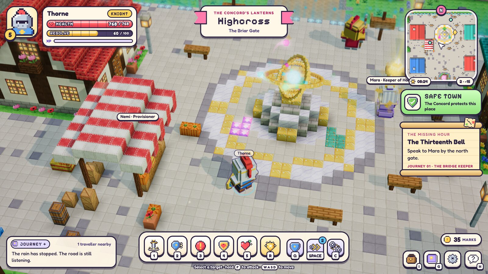
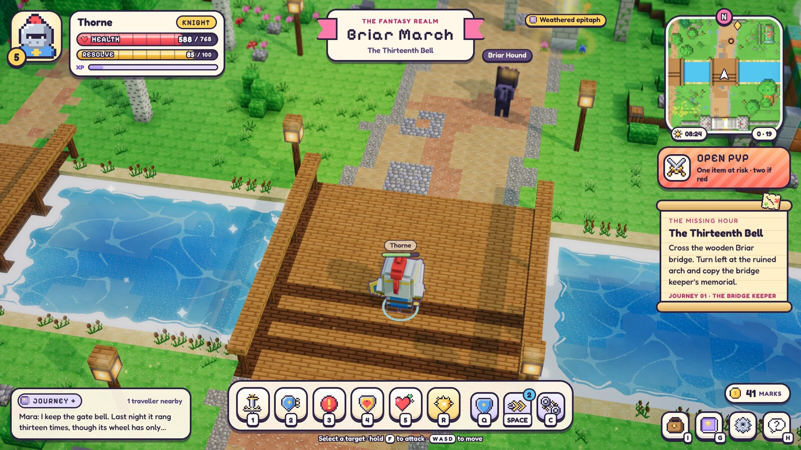
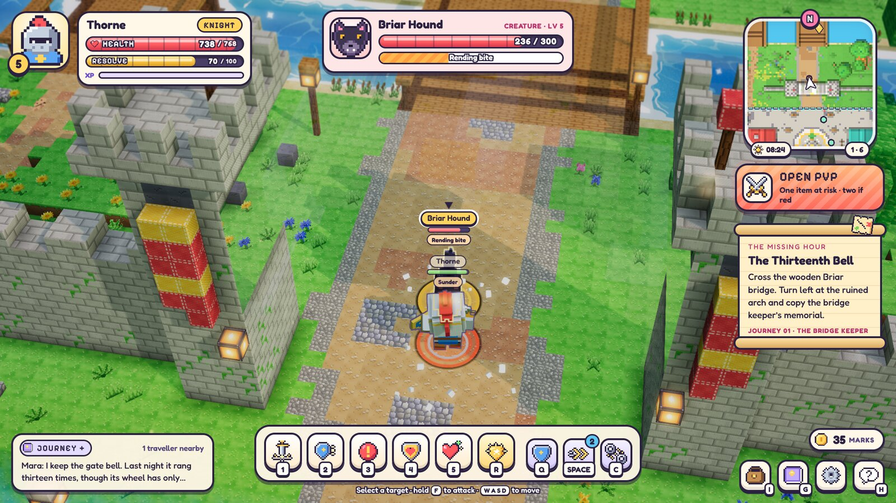
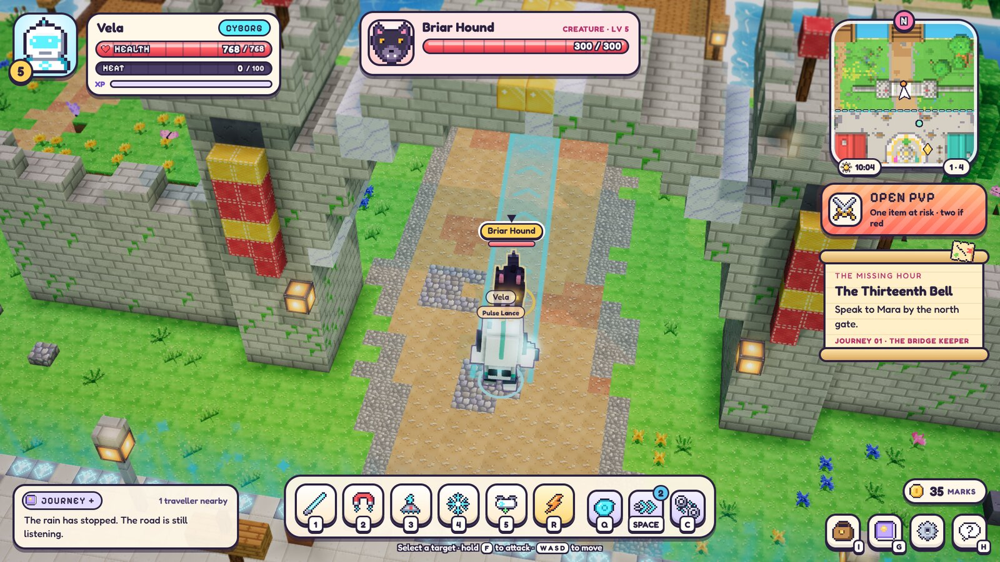
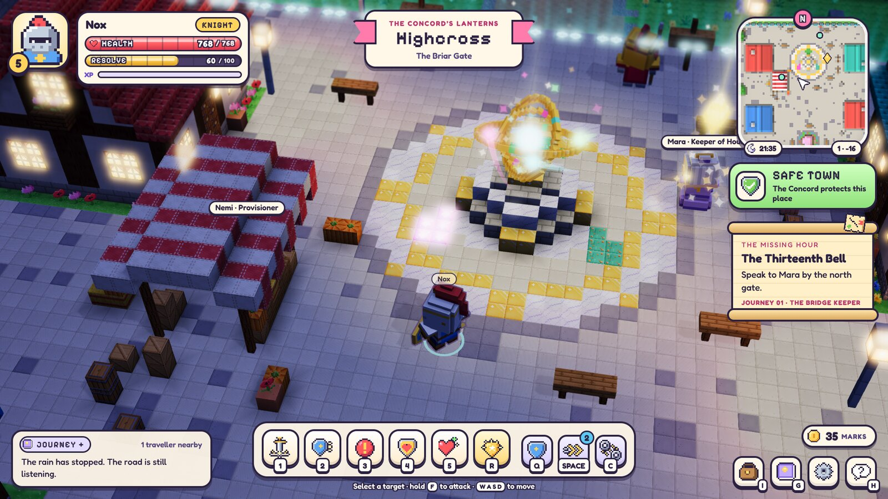
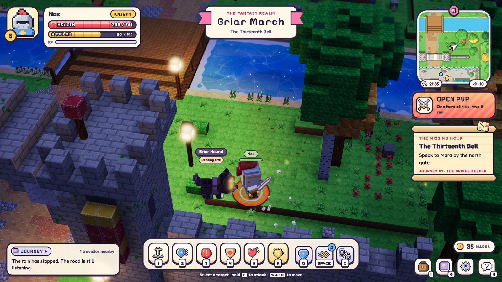
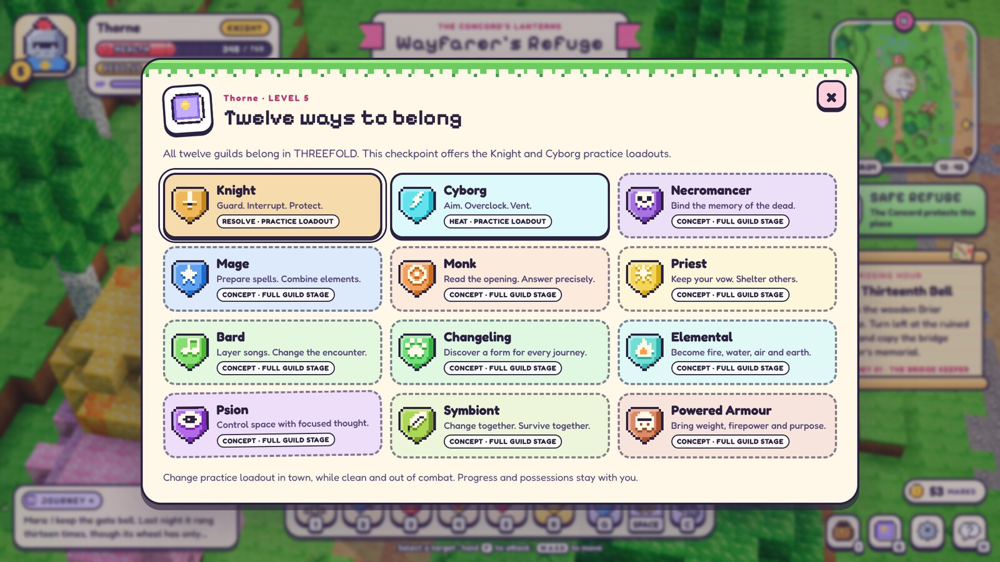

A world made of blocks.
At the owner's direction, THREEFOLD trades its painterly prototype for cute, Minecraft-like blocks and big, readable effects, and now plays entirely in the browser.
Playable in the browser · voxel art pass · ten guilds still to buildOn 13 October the owner asked for a change of direction: “Turn this into a browser based game — more cute cartoony, like Minecraft. Add amazing visual effects.” The runtime now follows a new voxel art direction. The concept images, Meshy bodies, Blender sources and their evidence remain in the repository as preserved references. The game no longer loads those models. The world, the quest, the twelve-guild scope and open PvP outside towns are unchanged.


Everything on screen is generated in TypeScript when the page loads. No paid generation, provider job or downloaded model was used. The world is built from half-metre blocks textured by a painted 64-tile atlas, meshed with face culling and baked ambient occlusion. Seed 1847 produces 65 structures, 35 light sources and 48 ambient emitters across Highcross and the Briar March. These include the plaza and its astrolabe, the market, houses, gate towers, the road, river, bridge, waterfall, pipe ruin, memorial and refuge. Building footprints sit inside the server's unchanged collision boxes. Trees and houses fade when they hide the traveller.




Characters are chibi block figures built from ten-centimetre voxels: the Knight, the Cyborg, the Briar Hound, Mara, Nemi and the Concord Watch. Their springy procedural animation follows the server's windup, impact and recovery timings, so a Knight's Sunder still reads as a committed swing.
Effects remain presentation only. Confirmed server events trigger them: the orange windup ring under a Sunder, the Cyborg's Pulse Lance beam, block debris, stars, rings, trails, screen shake and a brief hit-stop. Ambient effects include fireflies, petals, butterflies, chimney smoke, river sparkles, waterfall mist and the glowing astrolabe. A day and night cycle brings sunsets, stars and lanterns that wake at dusk. Post-processing adds bloom, tone mapping, a gentle tilt-shift and vignette. The HUD was redrawn with pixel-art icons and rounded type, and the synthesized audio became a music box.








The authoritative simulation can now also run inside the page. It keeps the server's 20 Hz step, 10 Hz snapshots and command limits, and saves to the browser's local storage. Multiplayer still uses the local server. A static build was shared privately by link with the owner, who played it and reported: “the game as it is right now is perfect. Good performance and all that.” That is an informal first impression on the owner's own device, not a measured trace or an independent playtest.
An adversarial code review found one serious defect. A solo tab left waiting on the entrance screen could later write its older copy of the world over newer progress from another tab. Joining now takes a single-writer lock, continues from the newest save and tells a second tab to close the first. The review also added a notice when the browser refuses a save, restored the target outline after a guild change and guarded the static build tool's output folder. Regression tests cover the two-tab cases.
The frames below come from the production build of commit b7e4018, whose client source is the build the owner played. Headless Chromium rendered them in software at 1920 by 1080 with the medium preset, in day and night. Across the selected frames the renderer reported 131 to 230 draw calls and 62,680 to 255,218 active triangles, with no console messages. Software rendering ran at about one frame per second, so these frames show composition, not performance.
The next step is a roadmap for hosting real multiplayer and growing the world toward its source: the other ten guilds, more puzzle-driven quests in the 3 Kingdoms tradition, and the remaining Chapter One regions. All twelve guilds and open PvP outside towns remain required. This entry does not claim that content is complete.

